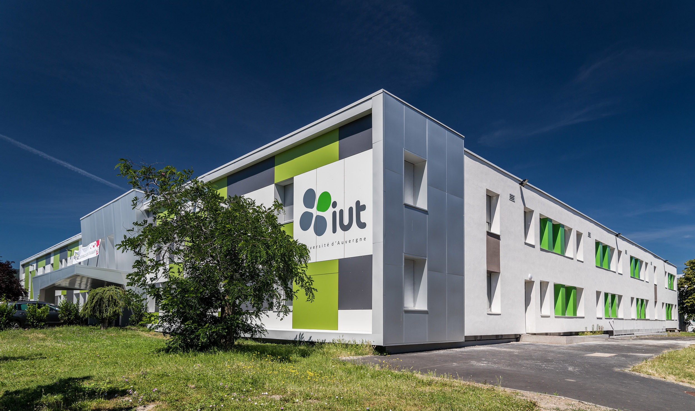
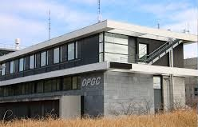
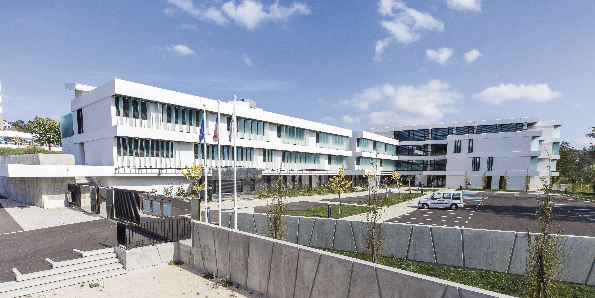
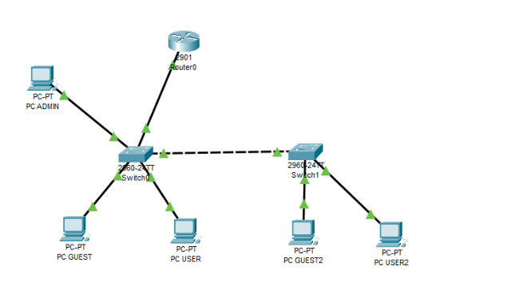

À propos de moi
Je m’appelle Vassili MEGY, je suis depuis octobre 2025 alternant chez Resintel Ingénieurie Télécommunications et également en deuxième année du BUT (Bachelor Universitaire de Technologie) Réseaux et Télécommunications parcours cybersécurité à Clermont-Ferrand. Passionné par les sciences et les nouvelles technologies, j’ai orienté mon parcours vers un domaine alliant informatique, réseaux et techniques de communication, avec l’ambition de construire une carrière dans ce secteur en constante évolution.
Après avoir obtenu mon baccalauréat général avec les spécialités Mathématiques, Physique-Chimie et la mineure Littérature Anglaise, ainsi qu’une option Mathématiques Expertes, j’ai entrepris des études en licence de Mathématiques et Physique à Clermont-Ferrand. Cette première expérience m’a permis de renforcer ma curiosité pour les disciplines scientifiques, mais aussi de mieux définir mes aspirations professionnelles.
Suite à ma licence de Physiques, j’ai choisi de me réorienter vers un domaine qui correspond davantage à mes intérêts pour les nouvelles technologies et l’innovation : les Réseaux et Télécommunications. Cette formation, axée sur l’informatique et la communication, me permet également de bénéficier de l’alternance pour acquérir une expérience professionnelle tout en consolidant mes compétences académiques.
Grâce à mon parcours, j’ai développé des compétences variées : une base solide en mathématiques et en physique, une familiarité avec les langages de programmation tels que Python, ainsi qu’une capacité d’adaptation à des environnements d’apprentissage exigeants. Mon intérêt pour l’informatique, combiné à mes expériences pratiques et mon goût pour les challenges techniques me rendent particulièrement motivé pour contribuer à des projets innovants dans le domaine des réseaux et télécommunications.
Je m’efforce de consolider mes compétences techniques pour m’insérer durablement dans le secteur des nouvelles technologies. Mon ambition est de participer à des projets qui transforment la manière dont les individus et les entreprises communiquent, en explorant des domaines tels que la cybersécurité ou l’administration de réseaux.
Formations

BUT Réseau et Télécom
Université Clermont-Auvergne depuis 2024
- j'ai choisi cette formation qui est davantage orientée vers l’informatique. car elle me permet d'étudier la programmation mais également de suivre un parcours en alternance, ce qui offre une voie professionnelle plus rapide et plus sécurisée qu’une licence classique.
- j'ai également été attiré par les travaux pratiques et aux projets proposés, qui m’ont déjà beaucoup aidé et continueront à m’aider dans les années à venir. Ces activités sont précieuses pour l’expérience qu’elles nous apportent, mais surtout pour les résultats concrets qu’elles permettent d’obtenir et pour les éventuelles difficultés que l’on peut rencontrer, au-delà de la théorie.
Licence Mathématiques-Physique
2022-2024 Université Clermont-Auvergne
- J’ai suivi pendant deux ans la licence en Mathématiques et Physique. Cette expérience m’a permis d’approfondir mes compétences scientifiques de manière globale.
- J’ai exploré des domaines variés, allant des algorithmes à la programmation, en passant par des travaux pratiques. Ces cours m’ont également appris à réaliser des calculs plus efficaces et précis grâce à des outils et méthodologies modernes.


baccalauréat
2019-2022 Lycée Boissy d'Anglas
- J’ai obtenu mon baccalauréat général au lycée Boissy d’Anglas à Annonay (Ardèche), avec les spécialités Mathématiques, Physique-Chimie en Terminale, et Littérature Anglaise en première. J’ai également suivi l’option Mathématiques Expertes pour approfondir mes compétences dans ce domaine exigeant et poursuivre mes études avec assurance.
- C'est ici que le choix du domaine dans lequel je travaillerais plus tard a été fait et développé.
Projets

Mise en place d’un réseau local (LAN)
Ce projet avait pour objectif de configurer un réseau local fonctionnel connecté à Internet, en mettant en pratique des concepts fondamentaux des réseaux. À travers plusieurs séances de travaux pratiques, j’ai acquis des compétences techniques essentielles, telles que l’adressage IP, la configuration d’un routeur logiciel, et le dépannage d’erreurs complexes. Ce projet illustre ma capacité à appliquer des connaissances théoriques à des cas concrets et à résoudre des problèmes de manière méthodique.
En savoir plus
Création d’un portfolio web
La création de ce portfolio professionnel a été l’occasion d’approfondir mes compétences en développement web, en combinant HTML, CSS et la bibliothèque Bootstrap. Ce projet m’a permis de concevoir une plateforme structurée et esthétique, tout en apprenant à gérer des conflits entre différentes technologies et à optimiser la présentation des contenus. Il reflète mon aptitude à travailler de manière autonome et à produire des résultats alignés sur des objectifs précis.
En savoir plusCompétences
80%
Réseaux
80%
Réseaux
Réseau
- Attribution d’adresses IP, configuration des sous-réseaux et des passerelles pour assurer la communication entre appareils.
- Configuration de service réseau tels que DHCP, DNS et HTTP.
- Mise en place de machines virtuelles pour simuler des environnements.
- Identification et résolution des problèmes de connectivité, comme des erreurs d’adressage ou des configurations incorrectes.
90%
python
90%
python
Programmation
- Utilisation de différents langages de programmation, notamment Python, PHP, Bash et Matlab.
- Maîtrise des concepts fondamentaux comme les boucles, les conditions, les fonctions et les classes.
- Création de scripts pour effectuer des tâches simples comme le traitement de données ou l’automatisation de flux de travail.
- Utilisation de structures de données comme les listes, les dictionnaires et les ensembles.
78%
télécom
78%
télécom
Télécommunication
- Expérience avec des appareils tels que les oscilloscopes, les générateurs de signaux, les résistances et les condensateurs.
- Application des principes électriques pour identifier et corriger les erreurs dans les montages.
- Capacité à rédiger des rapports techniques détaillés pour présenter les résultats de projets en réseaux et télécommunications.
69%
Html
69%
Html
Développement Web
- Création de pages web structurées et stylisées avec une mise en page responsive.
- Utilisation de la bibliothèque Bootstrap pour concevoir des interfaces modernes et adaptatives.
- Développement autonome de sites web personnels et de projets académiques.